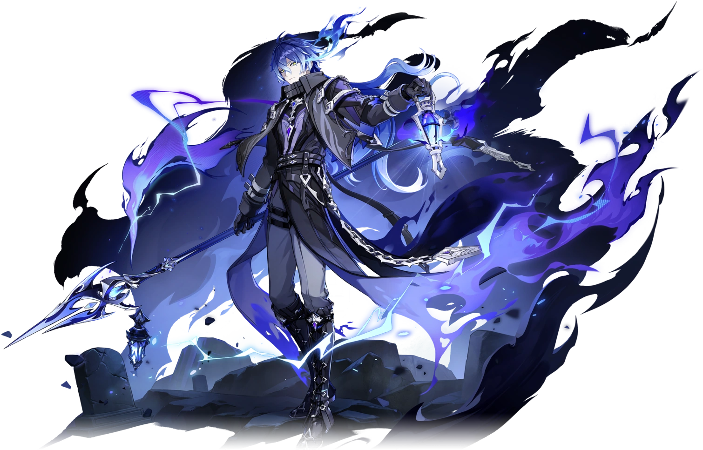

Светоносец Нод-Края, который присматривает за маяком и кладбищем на северном острове. Таинственный джентльмен с безупречными манерами.

Флинс — светоносец Нод-Края, присматривающий за маяком и кладбищем на северном острове.
Таинственный джентльмен с безупречными манерами. Его титул — «Дивный свет, неведомые тени», созвездие — Ночной Фонарь.